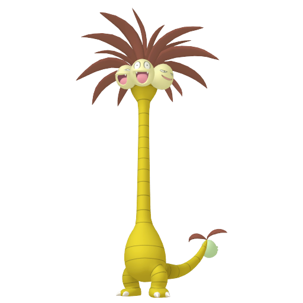
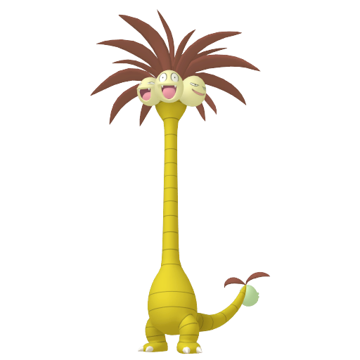

Qu'est-ce que la méthode SOS de Shiny Hunting ?
La méthode SOS est une technique de chasse aux Pokémon chromatiques (shiny) uniquement disponible dans les jeux de la septième génération sois Soleil et Lune et Ultra-Soleil et Ultra-Lune.
Elle consiste à faire apparaître des Pokémon spécifiques et les éliminer à la chaîne pour augmenter
les chances de rencontrer un Pokémon shiny.
Comment faire ?
Mettre en place la méthode SOS est très simple, il vous faudra un pokemon particulié et un objet :
Le Pokemon
Il vous faudra un pokemon ayant le talent récolte, l'attaque échange et l'attaque Tourmagik ou passe-cadeau.
Il faudra également que votre pokemon tienne la baie Mepo.
| Pokemon talent récolte |
Echange |
Tourmagik |
Passe-Cadeau |

Noeunoeuf |
- Oui par reproduction dans SL
- Oui par Maitre des Capacités
et reproduction dans USUL |
Non |
Oui au niveau 50 |
  
Noadkoko / Noadkoko D'alola |
- Oui par reproduction dans SL
- Oui par Maitre des Capacités
et reproduction dans USUL |
Non |
Non |
Brocélôme |
Oui uniquement dans USUL
par Maitre des Capacités |
Oui uniquement dans USUL
par Maitre des Capacités |
Oui par reproduction |

Desséliande |
Oui uniquement dans USUL
par Maitre des Capacités |
Oui uniquement dans USUL
par Maitre des Capacités |
Oui par reproduction |
*USUL = Ultra-Soleil et Ultra-Lune
*SL = Soleil et Lune
A noter qu'il est également mieux d'avoir un pokemon ayant l'attque Faux-Chage que vous enverrez au combat une fois l'attaque échange et l'attaque Tourmagik ou passe-cadeau utilisé.
L'objet
Vous devrez acheter un petit stock d'orbre frousse  disponible dans tous les centres Pokémon. Il servira à augmenter les chances d'appel à l'aide du pokemon.
disponible dans tous les centres Pokémon. Il servira à augmenter les chances d'appel à l'aide du pokemon.
Prévoir aussi un stock de soin pour soigner votre pokemon.
La shasse
- Envoyé tout d'abord votre pokemon avec le talent récolte et tenant la baie Mepo.
- Utilisé l'attaque échange afin de donner votre talent récolte au pokemon adverse.
- Utilisé l'attaque Tourmagik ou Passe-Cadeau pour donner votre baie Mepo au pokemon adverse.
(A ce stade, votre pokemon adverse ne peux plus tomber KO par manque de PP sur ses attaques)
- Envoyé votre ayant l'attaque Faux-Chage.
- Utilisé l'attaque Faux-Chage sur le pokemon adverse pour qu'il soit à 1 PV.
- Utilisé l'objet "Orbre Frousse" afin d'augmenter les chances d'appel à l'aide.
- Tuer en boucle le Pokémon appelé à l'aide jusqu'à obtenir le shiny !